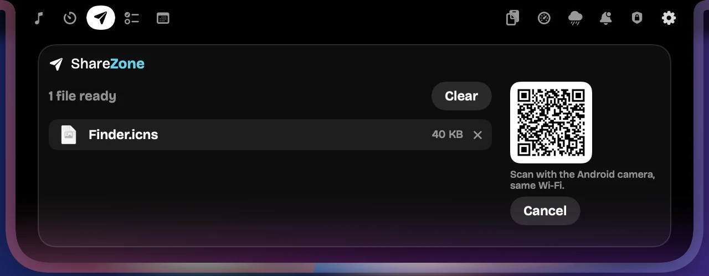

Game Awareness: 144 FPS, an excited mascot · Windows
Polaric turns the notch at the top of your Mac or PC into a living panel for music, meetings and messages. Version 1.2 adds your game's real FPS, your camera and mic at a glance, an idle clock, Privacy & Network and Screenshots. Free for macOS and Windows.
downloads so far · macOS 14+ on Apple silicon · Windows 10 and 11
What's new in Polaric 1.2
Five new features and a safer ShareZone. Three are for Windows gamers and meeting-goers; two work on both platforms.

65 FPS
Cam ON•Mic ON
12:00 PM
⌥⇧SAlt+Shift+S
Windows · the notch while a game runs
New Windows · Polaric 1.2
Your FPS, live in the notch
Start a game and the notch shows its name and its real frames per second, read from Windows itself, never your screen's refresh rate. Your mascot reacts as you play: excited at 120 and up, worried when it dips below 40. Polaric adds nothing to the game, so anti-cheat stays out of it.
Games from Steam, Epic, GOG, Xbox, Riot, Battle.net, EA and Ubisoft, or any game Windows recognises, in a window, borderless or full screen. Reading FPS takes a one-time permission in Settings; until then it shows FPS --.
New Windows · Polaric 1.2
Cam and mic, at a glance
On a Zoom, Teams, Webex, Slack, Discord or Google Meet call, the notch shows whether your camera and microphone are live: green for on, red for off. A call only counts while the app really uses them. Notifications still come through, then step aside, and it all stays off until you turn it on.
New Windows · Polaric 1.2
A clock with company
When nothing is going on, the notch settles into a small clock with your mascot beside it, blinking now and then. Pick 12 or 24-hour time and add a soft Idle Aura in your theme's colours. A game or a call takes over the moment it starts, and over a browser's tabs the notch still folds out of the way.
12-hour timeWith Idle Aura
New macOS and Windows · Polaric 1.2
See what's really in use
One page in the notch shows whether your camera, microphone, screen capture, location and Bluetooth are in use right now, never just which apps are allowed. An alert says so the moment one switches on. The same page checks your download, upload and ping every hour, or whenever you press Test now.
Polaric only asks the system whether each one is in use; it never records sound, pictures or where you are. Where the system gives no reliable signal (Screen Recording and Location on the Mac), it says Unavailable instead of guessing.
New macOS and Windows · Polaric 1.2
Grab any part of the screen
Press ⌥⇧S on a Mac or Alt+Shift+S on Windows, drag over what you want, and it's saved. Each file is named after the app you captured, like Google Chrome - November 1, 2026 - 12.20 PM, goes to the folder you choose, and old ones clear themselves after the days you pick.
Improved macOS and Windows · Polaric 1.2
Safer, and clearer about it
ShareZone sends by QR code. The code works only for the phone that scans it, so files never land on someone else's phone, and every send can be cancelled.
What's new, in About. One button lists what's new, what improved and what was fixed in your version.
Polaric Disclaimer. What Polaric keeps, every internet connection it makes and why, in plain words.
Shortcut check. A shortcut your system or another app already uses is caught, with a free one suggested.
Your setup survives every update. Every setting and every AutoText template stays exactly as you left it; new features simply start with their defaults.
Watch what's new
A minute and a half with Polaric 1.2 on macOS and Windows: what you do (Screenshots, Privacy & Network, ShareZone) and what just happens (the FPS mascot, the meeting lights, the idle clock, alerts).
Everything else it does
Synced lyrics
Up and running in minutes
Seconds
A minute
A minute
From then on
Seconds: Download the installer from this site.
A minute: Drag Polaric into Applications on a Mac, or run the setup on Windows.
A minute: On a Mac, turn Polaric on under Privacy & Security. On Windows, SmartScreen may ask: More info, then Run anyway.
From then on: Polaric updates itself, signed and checked, and keeps your settings.
Get Polaric, free
macOS
macOS 14 Sonoma or later, on a Mac with Apple silicon.
Download Polaric only from this site. Copies from anywhere else may have been changed. Official releases are signed, and Polaric checks every update before installing it.
The user guide shows how to set up every permission and use each feature: English · Bahasa Indonesia.
Make your notch work for you.
Free on macOS and Windows. It keeps getting better, and it updates itself.
Polaric is free and made by a small team. If it makes your day a little better, a coffee or a tip buys time for new features, polish and fixes. No pressure: using it and telling us what you think already helps a lot.